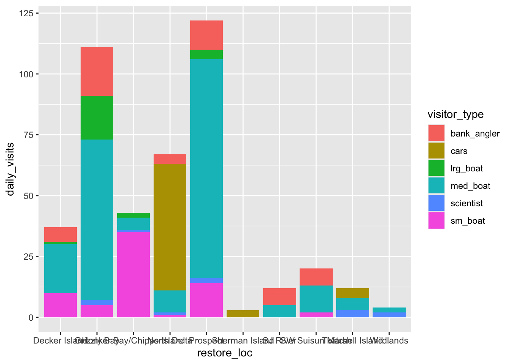

library(readr)
library(dplyr)
library(tidyr)
library(forcats) # makes working with factors easier
library(ggplot2)
library(leaflet) # interactive maps
library(DT) # interactive tables
library(scales) # scale functions for visualization
library(janitor) # expedite cleaning and exploring data
library(viridis) # colorblind friendly color palettea05_data_visualization
Introduction
For this assignment we will be looking at data that observes human activities and traces collected during monitoring runs to and on Ecorestore project sites. The dataset gives us snapshots of activity at the point and time of monitoring which happened on weekdays during daylight hours. The goal of this dataset is to assemble a composite and comparative image of human use and activities in the Sacramento-San Joaquin looking at waterways, tracts, flooded tracts, and restoration areas. Having this dataset will allow me to work with complex data points and allows us to then organize them to compare the similiarities and differences between all the data points gathered.
This Quarto document follows the Data Visualization: showing analysis of how to make a plot and map from the dataset provided as well as using ggplot2 package. Source: https://nceas-learning-hub.github.io/sfsu_data_sci/s11_r_data_visualization.html#plotting-with-ggplot2
About the data
Once again we will be using data titled Sacramento-San Joaquin Delta Socioecological Monitoring which gathers data of activity at the point and time of monitoring which is recorded during the weekdays during daylight hours. The data is readily available on the website which can be downloaded.
- Date downloaded: April 5, 2026
- Download source: https://portal.edirepository.org/nis/mapbrowse?packageid=edi.587.1
We will explore how to use certain functions to make the data easier to understand as well as being able to visually see the data in a way that makes sense.
Setup
#Make sure to download necessary packages.
Read in the data
# read in data from the data directory after manually downloading data which was published 8/6/2020
#Citation:
#Kraus-Polk, A. and B. Milligan. 2020. Sacramento-San Joaquin Delta Socioecological Monitoring ver 1. Environmental Data Initiative. https://doi.org/10.6073/pasta/e5bba3945d7f94c3005a7f8c38d00802 (Accessed 2026-04-07).
delta_visits_raw <- read_csv(here::here("data/raw/Socioecological_monitoring_data.csv"))
delta_visits <- delta_visits_raw %>%
janitor::clean_names()Analysis
visits_long <- delta_visits %>%
pivot_longer(cols = c(sm_boat, med_boat, lrg_boat, bank_angler, scientist, cars),
names_to = "visitor_type",
values_to = "quantity") %>%
rename(restore_loc = eco_restore_approximate_location) %>%
select(-notes)
## Checking the outcome
head(visits_long)# A tibble: 6 × 8
restore_loc reach latitude longitude date time_of_day visitor_type
<chr> <chr> <dbl> <dbl> <date> <chr> <chr>
1 Decker Island Brannan … 38.1 -122. 2017-07-07 unknown sm_boat
2 Decker Island Brannan … 38.1 -122. 2017-07-07 unknown med_boat
3 Decker Island Brannan … 38.1 -122. 2017-07-07 unknown lrg_boat
4 Decker Island Brannan … 38.1 -122. 2017-07-07 unknown bank_angler
5 Decker Island Brannan … 38.1 -122. 2017-07-07 unknown scientist
6 Decker Island Brannan … 38.1 -122. 2017-07-07 unknown cars
# ℹ 1 more variable: quantity <dbl>Plotting with ggplot2
daily_visits_loc <- visits_long %>%
group_by(restore_loc, date, visitor_type) %>%
summarise(daily_visits = sum(quantity))
head(daily_visits_loc)# A tibble: 6 × 4
# Groups: restore_loc, date [1]
restore_loc date visitor_type daily_visits
<chr> <date> <chr> <dbl>
1 Decker Island 2017-07-07 bank_angler 4
2 Decker Island 2017-07-07 cars 0
3 Decker Island 2017-07-07 lrg_boat 0
4 Decker Island 2017-07-07 med_boat 6
5 Decker Island 2017-07-07 scientist 0
6 Decker Island 2017-07-07 sm_boat 0ggplot(data = daily_visits_loc,
aes(x = restore_loc, y = daily_visits,
fill = visitor_type)) +
geom_col()
Map
locations <- visits_long %>%
distinct(restore_loc, .keep_all = TRUE) %>%
select(restore_loc, latitude, longitude)
head(locations)# A tibble: 6 × 3
restore_loc latitude longitude
<chr> <dbl> <dbl>
1 Decker Island 38.1 -122.
2 SW Suisun Marsh 38.2 -122.
3 Grizzly Bay 38.1 -122.
4 Prospect 38.2 -122.
5 SJ River 38.1 -122.
6 Wildlands 38.3 -122.leaflet(locations) %>%
addTiles() %>%
addMarkers(
lng = ~ longitude,
lat = ~ latitude,
popup = ~ restore_loc
)Analysis of code line by line
#Plot daily_visits_loc <- visits_long %>% #This line of code is making the daily visits loc be the data frame and starts with visits long to then pass it on to the next.
group_by(restore_loc, date, visitor_type) %>% #This line of code is telling us that our results should be calculated for the type of visit, restoration location and day. The %>% is telling it as an argument to the next line of code.
summarise(daily_visits = sum(quantity)) #This line of code is telling the software to calculate the daily visit for each of the locations. head(daily_visits_loc) #This line of code is telling to it to show us the top rows of the data.
ggplot(data = daily_visits_loc, #This is telling r to make a plot and to use daily visits loc as the data to be shown.
aes(x = restore_loc, y = daily_visits, #This line is specificying what will be on what axis.
fill = visitor_type)) + #This line tells r to color in the bars by color.
geom_col() #This line of code after geom will indicate what type of plot will be made.#Map locations <- visits_long %>% #This line of code is making the locations be the data frame and starts with visits long to then pass it onto the next statement.
distinct(restore_loc, .keep_all = TRUE) %>% #This line is using the distinct function to filter unique functios in a coulumn. The keep all will make is so that the next line of code will keep all the columns of data so that it can have the latitude and longitude of each of the locations.
select(restore_loc, latitude, longitude)head(locations) #This will give us the top rows of the data.
leaflet(locations) %>% #leaflet allows you to make an interactive map of the locations. The %>% pipe operator allows for it to be chain together the operation to continue onto the next line.
addTiles() %>% #This will add base tiles to the map.
addMarkers( # This line along with the other three lines
lng = ~ longitude,
lat = ~ latitude,
popup = ~ restore_loc
) # These four lines tell us to add makers onto the map marking the longitude and latitude.Discussion
The plot is showing us visually the daily visitor activity across locations that are in the process of restoration. The five locations on the left have a higher percentage of visitor activity while the five locations to the right have a low percentage of visitor activity. The key all the way to the right tells us the visitor type and organized them by color sho we can see the how many times they visit the specific locations.
The map is showing us the latitude and longitude of each location going through the restoration process. This makes it easier and faster to understand because visually we are able to see locations on a map rather than numbers on a table.